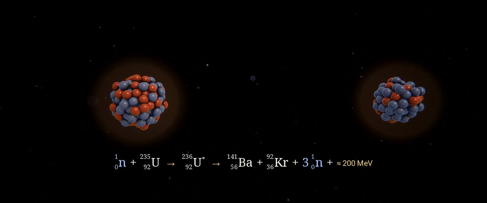
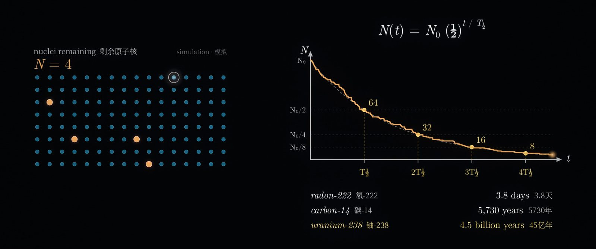
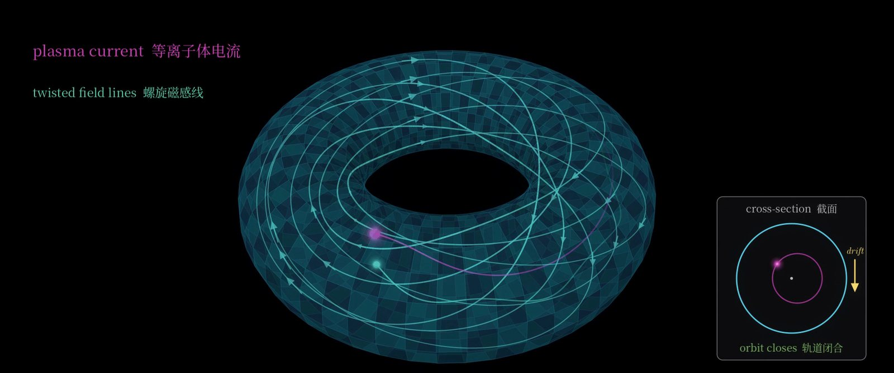

<meta data-alternate="https://freshmark.sunisalex.org/posts/technology/nucleus-documentary/" data-article="true" data-canonical="https://freshmark.sunisalex.org/en/posts/technology/nucleus-documentary/" data-description="A bilingual documentary short about nuclear energy, from Becquerel&#39;s photographic plate to fusion, made without a camera, a video model or a GPU: shaders, archival scans, a synthesized score, three 3Blue1Brown-style explainers, and a lot of automated checking." data-freshmark-page data-title="NUCLEUS: A Six-Minute History of Nuclear Energy, Built Entirely from Code — Freshmark"><main><header class="container article-header"><a href="/en/" class="back-link">← Back to all writing</a><p class="eyebrow article-subject">Technology / Physics</p><h1>NUCLEUS: A Six-Minute History of Nuclear Energy, Built Entirely from Code</h1><p class="article-dek">A bilingual documentary short about nuclear energy, from Becquerel's photographic plate to fusion, made without a camera, a video model or a GPU: shaders, archival scans, a synthesized score, three 3Blue1Brown-style explainers, and a lot of automated checking.</p><div class="article-meta"><time datetime="2026-10-03">October 3, 2026</time><span>10 min read</span><span>Documentary · Nuclear Physics · Video Production · AI · GLSL</span><span class="view-count" data-article-view-count hidden>Article views <strong data-article-views></strong></span><a href="index.md" download>Download Markdown</a><button type="button" class="article-share" data-share-article data-share-text="A bilingual documentary short about nuclear energy, from Becquerel&#39;s photographic plate to fusion, made without a camera, a video model or a GPU: shaders, archival scans, a synthesized score, three 3Blue1Brown-style explainers, and a lot of automated checking." data-share-title="NUCLEUS: A Six-Minute History of Nuclear Energy, Built Entirely from Code"><span data-share-label>Share article</span></button><output aria-live="polite" class="visually-hidden" data-share-status role="status"></output></div></header><div class="article-wrap"><aside class="toc"><div class="toc-head"><p>On this page</p><button type="button" class="toc-toggle" aria-expanded="false" aria-label="Toggle table of contents" data-toc-toggle><span class="toc-toggle-label">Table of contents</span><span class="toc-toggle-icon" aria-hidden="true"></span></button></div><nav aria-label="Table of contents" class="toc-links" data-toc-links><a href="#the-film" class="toc-level-2">The film</a><a href="#three-explainers-for-high-school-students" class="toc-level-3">Three explainers for high-school students</a><a href="#how-it-was-made" class="toc-level-2">How it was made</a><a href="#a-timeline-in-bars-not-seconds" class="toc-level-3">A timeline in bars, not seconds</a><a href="#pictures-from-shaders" class="toc-level-3">Pictures from shaders</a><a href="#real-paper-real-photographs" class="toc-level-3">Real paper, real photographs</a><a href="#explainers-in-the-style-of-3blue1brown" class="toc-level-3">Explainers in the style of 3Blue1Brown</a><a href="#a-score-made-from-scratch" class="toc-level-3">A score made from scratch</a><a href="#every-fact-checked" class="toc-level-3">Every fact checked</a><a href="#automated-quality-control" class="toc-level-3">Automated quality control</a><a href="#by-the-numbers" class="toc-level-2">By the numbers</a><a href="#what-we-learned" class="toc-level-2">What we learned</a><a href="#credits-and-licence" class="toc-level-2">Credits and licence</a></nav></aside><article class="prose"><figure class="prose-figure"><picture class="responsive-picture"><source srcset="cover.freshmark-e6a485de20df-480w.avif 480w, cover.freshmark-e6a485de20df-960w.avif 960w, cover.freshmark-e6a485de20df-1440w.avif 1440w" type="image/avif"><source srcset="cover.freshmark-e6a485de20df-480w.webp 480w, cover.freshmark-e6a485de20df-960w.webp 960w, cover.freshmark-e6a485de20df-1440w.webp 1440w" type="image/webp"></picture><figcaption>NUCLEUS · 原子核 — A Brief History of Nuclear Energy</figcaption></figure><!-- Embed the video here once it is uploaded, for example:
<iframe src="https://player.bilibili.com/player.html?bvid=BV..." width="100%" height="480" frameborder="0" allowfullscreen></iframe>
--><p><strong>NUCLEUS</strong> is a 5-minute-48-second documentary short about nuclear energy. It starts with a photographic plate that fogged in a drawer in Paris in 1896 and ends with machines that are trying to build a small star on Earth. It has bilingual subtitles (Simplified Chinese above, English below), an original score, and three animated explainers written for high-school students.</p><p>It was also made without a camera, a video-generation model or a graphics card. Every frame was computed by code: GLSL shaders, cairo vector graphics and Python, rendered on the CPU of an Android phone in a Termux shell. Claude Opus 5.5, working in Claude Code, wrote the code, sourced and checked the facts and archival images, composed the music, and ran the quality checks. I directed: I set the brief, approved the storyboard, and asked for each round of additions.</p><p>This article covers both halves: what the film shows, and how it was made.</p><h2 id="the-film">The film</h2><p>The story runs in chronological order, with three pauses to explain the science behind it.</p><table><thead><tr><th>Time</th><th>Chapter</th></tr></thead><tbody><tr><td>0:00</td><td>Opening: everything is made of atoms</td></tr><tr><td>0:12</td><td><strong>Explainer:</strong> natural radioactivity (Becquerel 1896, the Curies 1898, α/β/γ, half-life)</td></tr><tr><td>0:48</td><td>Rutherford's gold-foil experiment (1909) and the nucleus (1911)</td></tr><tr><td>1:12</td><td>Chadwick's neutron (1932) and fission in Berlin (1938)</td></tr><tr><td>1:33</td><td>The chain reaction and Einstein's letter (1939)</td></tr><tr><td>1:48</td><td>Chicago Pile-1 (1942) and the Manhattan Project</td></tr><tr><td>2:03</td><td>Trinity, the first nuclear test (16 July 1945)</td></tr><tr><td>2:15</td><td>Hiroshima and Nagasaki (August 1945)</td></tr><tr><td>2:36</td><td>The first nuclear electricity: EBR-I (1951), Obninsk (1954), Calder Hall (1956)</td></tr><tr><td>2:54</td><td><strong>Explainer:</strong> how a reactor stays in control (a Markov chain)</td></tr><tr><td>3:30</td><td>Chernobyl (1986), Pripyat, and Fukushima Daiichi (2011)</td></tr><tr><td>3:54</td><td>Fusion: the Sun, NIF ignition (2022), ITER</td></tr><tr><td>4:18</td><td><strong>Explainer:</strong> how a tokamak holds a plasma (in the style of 3Blue1Brown)</td></tr><tr><td>4:54</td><td>Finale and credits: 58 pioneers of nuclear science</td></tr></tbody></table><figure class="prose-figure"><picture class="responsive-picture"><source srcset="becquerel-plate.freshmark-fa6a39bfd3e2-480w.avif 480w, becquerel-plate.freshmark-fa6a39bfd3e2-960w.avif 960w, becquerel-plate.freshmark-fa6a39bfd3e2-1440w.avif 1440w" type="image/avif"><source srcset="becquerel-plate.freshmark-fa6a39bfd3e2-480w.webp 480w, becquerel-plate.freshmark-fa6a39bfd3e2-960w.webp 960w, becquerel-plate.freshmark-fa6a39bfd3e2-1440w.webp 1440w" type="image/webp"></picture><figcaption>Becquerel&#39;s own plate (public domain). His note reads “Papier noir. Croix de cuivre mince.”</figcaption></figure><p>The historical scenes mix generated 3D shots with real material: Becquerel's plate, the Curies in their laboratory, the 1911 page of Rutherford's paper, the Trinity fireball, the Calder Hall power station, Chernobyl's Unit 4, the Pripyat Ferris wheel, a satellite image of Fukushima, and an aerial photograph of ITER. Each archival image is credited on screen while it is visible.</p><figure class="prose-figure"><picture class="responsive-picture"><source srcset="fission.freshmark-7da797965b7d-480w.avif 480w, fission.freshmark-7da797965b7d-960w.avif 960w, fission.freshmark-7da797965b7d-1440w.avif 1440w" type="image/avif"><source srcset="fission.freshmark-7da797965b7d-480w.webp 480w, fission.freshmark-7da797965b7d-960w.webp 960w, fission.freshmark-7da797965b7d-1440w.webp 1440w" type="image/webp"></picture><figcaption>Fission, with its balanced reaction equation</figcaption></figure><p>Three nuclear reactions appear as equations, revealed term by term and checked for balanced mass and charge: Chadwick's neutron reaction, uranium fission and deuterium–tritium fusion.</p><h3 id="three-explainers-for-high-school-students">Three explainers for high-school students</h3><p>The explainers slow the film down to show <em>why</em>, not only <em>what</em>.</p><p><strong>Natural radioactivity.</strong> After Becquerel and the Curies, an unstable nucleus emits three kinds of radiation. Paper stops alpha, aluminium stops beta, and gamma takes thick lead or concrete. Then 128 simulated nuclei decay at random. Each decay is a flash on screen and a Geiger click in the soundtrack, and the count halves at every half-life:</p><p><span class="math-expression math-display" data-math-source="N(t) = N_0 \left(\tfrac{1}{2}\right)^{t/T_{1/2}}" data-math-display></span></p><figure class="prose-figure"><picture class="responsive-picture"><source srcset="alpha-beta-gamma.freshmark-1313acfccd8b-480w.avif 480w, alpha-beta-gamma.freshmark-1313acfccd8b-960w.avif 960w, alpha-beta-gamma.freshmark-1313acfccd8b-1440w.avif 1440w" type="image/avif"><source srcset="alpha-beta-gamma.freshmark-1313acfccd8b-480w.webp 480w, alpha-beta-gamma.freshmark-1313acfccd8b-960w.webp 960w, alpha-beta-gamma.freshmark-1313acfccd8b-1440w.webp 1440w" type="image/webp"></picture><figcaption>Paper, aluminium and lead</figcaption></figure><figure class="prose-figure"><picture class="responsive-picture"><source srcset="half-life.freshmark-6be97b24bc81-480w.avif 480w, half-life.freshmark-6be97b24bc81-960w.avif 960w, half-life.freshmark-6be97b24bc81-1440w.avif 1440w" type="image/avif"><source srcset="half-life.freshmark-6be97b24bc81-480w.webp 480w, half-life.freshmark-6be97b24bc81-960w.webp 960w, half-life.freshmark-6be97b24bc81-1440w.webp 1440w" type="image/webp"></picture><figcaption>The count lands on 64, 32, 16 and 8 at each half-life; real half-lives below</figcaption></figure><p><strong>How a reactor stays in control.</strong> We follow one neutron. Its fate is a chain of chances: it may split a uranium-235 nucleus, be captured, be absorbed by a control rod, or escape. The next step depends only on its current state, which is what makes this a Markov chain. A &quot;dice bar&quot; picks each step on the beat. Each fission frees about 2.4 neutrons, so the average number of new neutrons per neutron is</p><p><span class="math-expression math-display" data-math-source="k = \nu \, P_{\text{fission}} \approx 2.4 \times 0.42 \approx 1.0" data-math-display></span></p><p>With <span class="math-expression math-inline" data-math-source="k &lt; 1"></span>&#32;the reaction dies out, and with <span class="math-expression math-inline" data-math-source="k &gt; 1"></span>&#32;it grows. Pushing control rods of boron or cadmium in raises the chance of absorption and lowers <span class="math-expression math-inline" data-math-source="k"></span>. The segment ends on the detail that makes reactors controllable: about 0.65% of the neutrons from uranium-235 come out seconds late, from fission fragments. The probabilities are labelled as illustrative values; ν ≈ 2.4 and the 0.65% are the real uranium-235 numbers.</p><figure class="prose-figure"><picture class="responsive-picture"><source srcset="markov-chain.freshmark-f0d228dcb005-480w.avif 480w, markov-chain.freshmark-f0d228dcb005-960w.avif 960w, markov-chain.freshmark-f0d228dcb005-1440w.avif 1440w" type="image/avif"><source srcset="markov-chain.freshmark-f0d228dcb005-480w.webp 480w, markov-chain.freshmark-f0d228dcb005-960w.webp 960w, markov-chain.freshmark-f0d228dcb005-1440w.webp 1440w" type="image/webp"></picture><figcaption>Fission, captured, control rod or escape, each with its probability</figcaption></figure><figure class="prose-figure"><picture class="responsive-picture"><source srcset="control-rods.freshmark-8f34588a6e75-480w.avif 480w, control-rods.freshmark-8f34588a6e75-960w.avif 960w, control-rods.freshmark-8f34588a6e75-1440w.avif 1440w" type="image/avif"><source srcset="control-rods.freshmark-8f34588a6e75-480w.webp 480w, control-rods.freshmark-8f34588a6e75-960w.webp 960w, control-rods.freshmark-8f34588a6e75-1440w.webp 1440w" type="image/webp"></picture><figcaption>Rods out: k = 1.10. Rods in: k = 0.90. Balanced: k = 1.00</figcaption></figure><p><strong>How a tokamak holds a plasma.</strong> No material can touch a 150-million-degree plasma, so a tokamak holds it with magnetic fields. In a uniform field a charged particle spirals around a field line, pushed by the Lorentz force <span class="math-expression math-inline" data-math-source="\mathbf{F} = q\,\mathbf{v}\times\mathbf{B}"></span>. Bend the field into a ring and it becomes stronger on the inside (<span class="math-expression math-inline" data-math-source="B \propto 1/R"></span>), so ions drift one way and electrons the other, into the wall. A current in the plasma adds a second field and twists the lines into helices. Riding the twist, each particle spends as long above the midplane as below it, and the drift cancels. In the cross-section inset, the guiding centre follows</p><p><span class="math-expression math-display" data-math-source="\frac{d\mathbf{r}}{dt} = \Omega\,\hat{\mathbf{z}}\times\mathbf{r} - v_d\,\hat{\mathbf{y}}" data-math-display></span></p><p>whose solution is a closed, slightly shifted circle instead of a path into the wall.</p><figure class="prose-figure"><picture class="responsive-picture"><source srcset="gyration.freshmark-d52950af2304-480w.avif 480w, gyration.freshmark-d52950af2304-960w.avif 960w, gyration.freshmark-d52950af2304-1440w.avif 1440w" type="image/avif"><source srcset="gyration.freshmark-d52950af2304-480w.webp 480w, gyration.freshmark-d52950af2304-960w.webp 960w, gyration.freshmark-d52950af2304-1440w.webp 1440w" type="image/webp"></picture><figcaption>One gyration per beat of the music</figcaption></figure><figure class="prose-figure"><picture class="responsive-picture"><source srcset="twisted-field.freshmark-b6b3335d1009-480w.avif 480w, twisted-field.freshmark-b6b3335d1009-960w.avif 960w, twisted-field.freshmark-b6b3335d1009-1440w.avif 1440w" type="image/avif"><source srcset="twisted-field.freshmark-b6b3335d1009-480w.webp 480w, twisted-field.freshmark-b6b3335d1009-960w.webp 960w, twisted-field.freshmark-b6b3335d1009-1440w.webp 1440w" type="image/webp"></picture><figcaption>With the twist, the orbit closes</figcaption></figure><figure class="prose-figure"><picture class="responsive-picture"><source srcset="tokamak.freshmark-bd5a27b32f4a-480w.avif 480w, tokamak.freshmark-bd5a27b32f4a-960w.avif 960w, tokamak.freshmark-bd5a27b32f4a-1440w.avif 1440w" type="image/avif"><source srcset="tokamak.freshmark-bd5a27b32f4a-480w.webp 480w, tokamak.freshmark-bd5a27b32f4a-960w.webp 960w, tokamak.freshmark-bd5a27b32f4a-1440w.webp 1440w" type="image/webp"></picture><figcaption>Tokamak: Russian for “toroidal chamber with magnetic coils”</figcaption></figure><h2 id="how-it-was-made">How it was made</h2><h3 id="a-timeline-in-bars-not-seconds">A timeline in bars, not seconds</h3><p>The film is built on one file, <code>timeline.py</code>. The music runs at 80 BPM in 4/4, so one bar lasts exactly three seconds, and every scene, cut, subtitle, on-screen dateline and sync point is defined in bars and beats. The renderer, the score and the subtitle generator all read the same file. Synchronization is therefore by construction: the Chernobyl explosion, the fusion flash and the fission split land on a downbeat because they are <em>defined</em> as downbeats.</p><p>The same choice made the film easy to extend. The three explainers were added after a finished four-minute version existed. Each one is a twelve-bar insert, so everything after it shifted by a whole number of bars. Only the new material and its transitions (2,772 frames) had to be rendered and spliced in, instead of all 8,352.</p><h3 id="pictures-from-shaders">Pictures from shaders</h3><p>The 3D shots are ray-marched in GLSL fragment shaders through a headless OpenGL context on Mesa's CPU renderer (llvmpipe): gold foil, nuclei, the chain-reaction cascade, Chicago Pile-1, the pocket watch at Hiroshima, the paper lanterns. Every scene goes through one shared post-processing chain: bloom, anamorphic streaks, halation, depth of field, a filmic tone curve, colour grade, film grain and a 2.39:1 letterbox. That shared chain makes 26 very different scenes look like one film.</p><p>A typical frame took 1.7–3 seconds. The film was rendered in four-second chunks to a near-lossless intermediate, so a crash or an interrupted session cost one chunk, never the whole render.</p><h3 id="real-paper-real-photographs">Real paper, real photographs</h3><p>Historical material comes from Wikimedia Commons and the Internet Archive, with the licence checked for every file. Photographs get slow camera moves and a film treatment, and papers are laid on a lamp-lit desk with a highlighter sweep over the key sentence. Rutherford's 1911 page is the real scan. The 1932 and 1939 papers are still under copyright, so they appear as typeset recreations of verified sentences and are labelled as such on screen.</p><h3 id="explainers-in-the-style-of-3blue1brown">Explainers in the style of 3Blue1Brown</h3><p>The explainers needed a different look: clean vector graphics, LaTeX-style mathematics, and smooth 3D on a dark background. They were drawn with a small module written for the project, using cairo for shapes, Pillow for text (including Chinese), and a 3D camera that draws curves and surfaces back to front. The palette borrows Manim's default colours, and the mathematics is set in Computer Modern. The diagrams pass through the same post-processing chain as the rest of the film with a &quot;clean&quot; grade, so they dissolve into and out of the cinematic scenes without a visible seam.</p><h3 id="a-score-made-from-scratch">A score made from scratch</h3><p>There are no samples in the music. Every instrument is synthesized in Python: felt piano, strings, plucks, celesta, bells, choir, taiko, sub-bass impacts, risers and Geiger-counter clicks. The score is mixed with synthetic reverbs and mastered to −16 LUFS. Visual and musical events come from the same data, so every Geiger click you hear is a flash you see. In the explainers, each fate of the neutron has its own sound, the <span class="math-expression math-inline" data-math-source="k = 0.9"></span>, <span class="math-expression math-inline" data-math-source="1.1"></span>&#32;and <span class="math-expression math-inline" data-math-source="1.0"></span>&#32;curves fall, rise and hold a note, and the particle completes one gyration per beat.</p><h3 id="every-fact-checked">Every fact checked</h3><p>Every date, number and quotation on screen is listed in a fact sheet with its sources. This caught real errors. The word &quot;radioactivity&quot; was introduced in a joint paper by both Curies, so the subtitle credits both of them. The first draft of the tokamak explainer had the drift direction backwards, and it was corrected before rendering.</p><h3 id="automated-quality-control">Automated quality control</h3><p>Most of the problems that would have embarrassed us were found by scripts, not by eye:</p><ul><li><strong>A/V sync.</strong> A script measures the audio onset and the picture change at every scripted event. It found one flash two frames (83 ms) late; now every hard hit lands on its exact frame.</li><li><strong>Framing.</strong> Three archival camera moves briefly showed black edges beyond the photograph. A script now checks that every move stays inside its image.</li><li><strong>Colour.</strong> The intermediates used ffmpeg's default BT.601 colour matrix, while players assume BT.709 for HD video. The deliverables are converted and tagged correctly.</li><li><strong>Subtitles.</strong> A frame is checked at every cue for collisions with on-screen text, and the burned and clean versions are verified separately.</li><li><strong>Seams.</strong> Where new footage meets reused footage, a script compares frame differences. It caught a plasma flicker that depended on absolute time.</li></ul><figure class="prose-figure"><picture class="responsive-picture"><source srcset="pioneers.freshmark-e2d77187ef3e-480w.avif 480w, pioneers.freshmark-e2d77187ef3e-960w.avif 960w, pioneers.freshmark-e2d77187ef3e-1440w.avif 1440w" type="image/avif"><source srcset="pioneers.freshmark-e2d77187ef3e-480w.webp 480w, pioneers.freshmark-e2d77187ef3e-960w.webp 960w, pioneers.freshmark-e2d77187ef3e-1440w.webp 1440w" type="image/webp"></picture><figcaption>The end credits: 58 pioneers, from Becquerel to the present, each with a contribution</figcaption></figure><h2 id="by-the-numbers">By the numbers</h2><table><thead><tr><th></th><th></th></tr></thead><tbody><tr><td>Runtime</td><td>5:48 (8,352 frames at 24 fps)</td></tr><tr><td>Scenes</td><td>23 historical scenes and 3 explainers</td></tr><tr><td>Subtitle cues</td><td>64, in Chinese and English</td></tr><tr><td>Pioneers in the credits</td><td>58</td></tr><tr><td>Rendering speed</td><td>1.7–3 s per cinematic frame, 0.5–1 s per explainer frame, on a phone CPU</td></tr><tr><td>Versions</td><td>3:15, then 4:00 (papers, equations, credits), then 5:48 (explainers)</td></tr></tbody></table><h2 id="what-we-learned">What we learned</h2><ul><li><strong>Decide the scope first.</strong> Almost all the rework came from features added after a version was finished.</li><li><strong>Make time musical.</strong> A bar-based timeline made sync automatic and late insertions cheap.</li><li><strong>Approve stills before motion.</strong> A storyboard with one still per scene is the cheapest place to change direction.</li><li><strong>Trust measurements over impressions.</strong> Each automated check found a real defect that looked fine in passing.</li></ul><h2 id="credits-and-licence">Credits and licence</h2><p>The score, animation, typography and visual effects were made for this film. The archival images are public domain, OGL, CC BY or CC BY-SA. Because four CC BY-SA photographs (Obninsk, Chernobyl, Pripyat and Fukushima) appear in modified form, the film is shared under CC BY-SA 4.0. The explainers are inspired by 3Blue1Brown; they are not affiliated with or made by 3Blue1Brown.</p></article></div><section class="container comments" data-comments data-comments-path="/en/posts/technology/nucleus-documentary/"><div class="comments-head"><div><p class="eyebrow">Comments</p><h2 data-comments-title>Comments</h2></div><p>Sign in to join the discussion. Email is verified only when you register.</p></div><div class="comment-list" aria-live="polite" data-comment-list><p class="comment-state" data-comment-state>Loading comments…</p></div><button type="button" class="comment-more" data-comments-more hidden>Load older comments</button><div class="comment-auth" data-comment-auth><p class="comment-auth-status" data-auth-loading>Checking your session…</p><div hidden data-auth-guest><form class="comment-auth-form" data-auth-login><h3>Sign in to comment</h3><label>Email<input autocomplete="email" name="email" maxlength="254" required type="email"></label><label>Password<input autocomplete="current-password" name="password" maxlength="128" required type="password"></label><div class="comment-form-foot"><p class="comment-form-status" role="status" data-auth-login-status></p><button type="submit">Sign in</button></div></form><details class="comment-register"><summary>Need an account? Register</summary><form class="comment-auth-form" data-auth-register><label>Name<input autocomplete="name" name="name" maxlength="40" required></label><label>Email<input autocomplete="email" name="email" maxlength="254" required type="email"></label><label>Password<input autocomplete="new-password" name="password" maxlength="128" required type="password" minlength="8"></label><p class="comment-auth-hint">Use at least 8 characters.</p><div class="comment-form-foot"><p class="comment-form-status" role="status" data-auth-register-status></p><button type="submit">Register</button></div></form></details></div><form class="comment-auth-form" hidden data-auth-verify><p>We sent a code to your email. Complete registration within 10 minutes.</p><label>Six-digit code<input autocomplete="one-time-code" name="code" maxlength="6" required minlength="6" inputmode="numeric" pattern="[0-9]{6}"></label><div class="comment-form-foot"><p class="comment-form-status" role="status" data-auth-verify-status></p><button type="submit">Complete registration</button></div></form><div class="comment-auth-user" data-auth-user hidden><p>Signed in as <strong data-auth-user-name></strong> <span data-auth-user-email></span></p><button type="button" data-auth-logout>Sign out</button></div></div><form class="comment-form" hidden data-comment-form><label>Comment<textarea maxlength="2000" minlength="2" name="body" placeholder="Share your thoughts…" required rows="5"></textarea></label><p class="comment-markdown-hint">Markdown supported: emphasis, links, quotes, lists, and code.</p><label aria-hidden="true" class="comment-honeypot">Website<input autocomplete="off" name="website" tabindex="-1"></label><div class="comment-form-foot"><p class="comment-form-status" role="status" data-comment-form-status></p><button type="submit" data-comment-submit>Post comment</button></div></form></section></main>